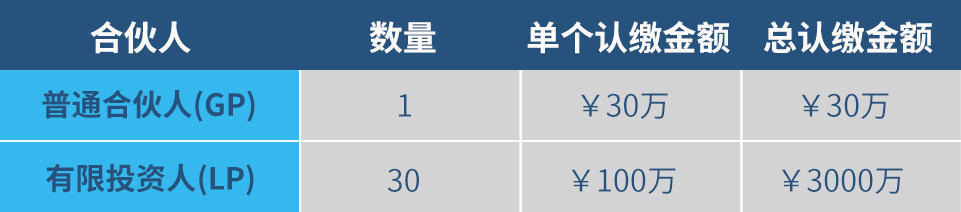

产品详情
总体框架

项目来源:“智造中国”高科技创新创业投融资大赛优质项目;
有限合伙人拥有项目选择权,可按照项目的进展和选择付款;
首期出资为认缴份额的30%(单个有限合伙人首期出资为30万元人民币);
4年投资期内单个有限合伙人需缴齐100万的认缴金额;
GP管理费用为总认缴出资的2%,在每个LP每次缴纳出资时一次性收取;
本次产品引入了风险资金池,总额为300万,在发生亏损的情况下,优先承担亏损金额。
投资方式
1. 所有合伙人成立有限合伙公司作为投资主体参与项目的投资;
2. GP定期向所有LP推荐拟投项目,LP可以选择是否投资与投资
普通合伙人(GP)的义务
1. 定期、不定期向所有LP推荐拟投项目,提供详细的尽调报告,定期组织针对LP的 项目路演会(包括线上与线下的方式)。4年投资期内总计推荐不少于20个项目;
2. 提供完善的投后管理服务,随时跟进项目进度;
3. 每季度向所有LP提供投资分析报告,包括项目进展、预计退出时间、退出方式与预期收益等;
有限合伙人(LP)的义务
1. 首期出资认缴总额的30%(30万元),4年投资期内出资总额达到100万元;
2. 缴纳出资额2%的管理费;
3. 通过参加GP组织的路演活动了解项目情况,其他配合GP产品管理的工作等;
收益结算方式
采用“按项目结算”的方式进行,单个项目退出时即向认缴该项目的投资人按比 例分配收益。
亏损后的分配
1. 如果100万出资所对应的项目总体亏损小于10%(含10%),则先直接亏损风险 资金池的资金(风险池资金不参与项目收益的分配)。
2. 如果100万出资所对应的项目总体亏损大于10%,则先直接亏损风险资金池的资 金,超出部分再亏损各有限合伙人(LP)的认缴出资额。
盈利后的分配
1. 如果单个项目年化收益小于10%(含10%),则全部分配给作为项目认购人的有 限合伙人(LP),按认缴出资比例分配。
2. 如果单个项目年化收益大于10%,超出10%部分的20%分配给普通合伙人(GP) ,80%按照认缴比例分配给各有限合伙人(LP)。